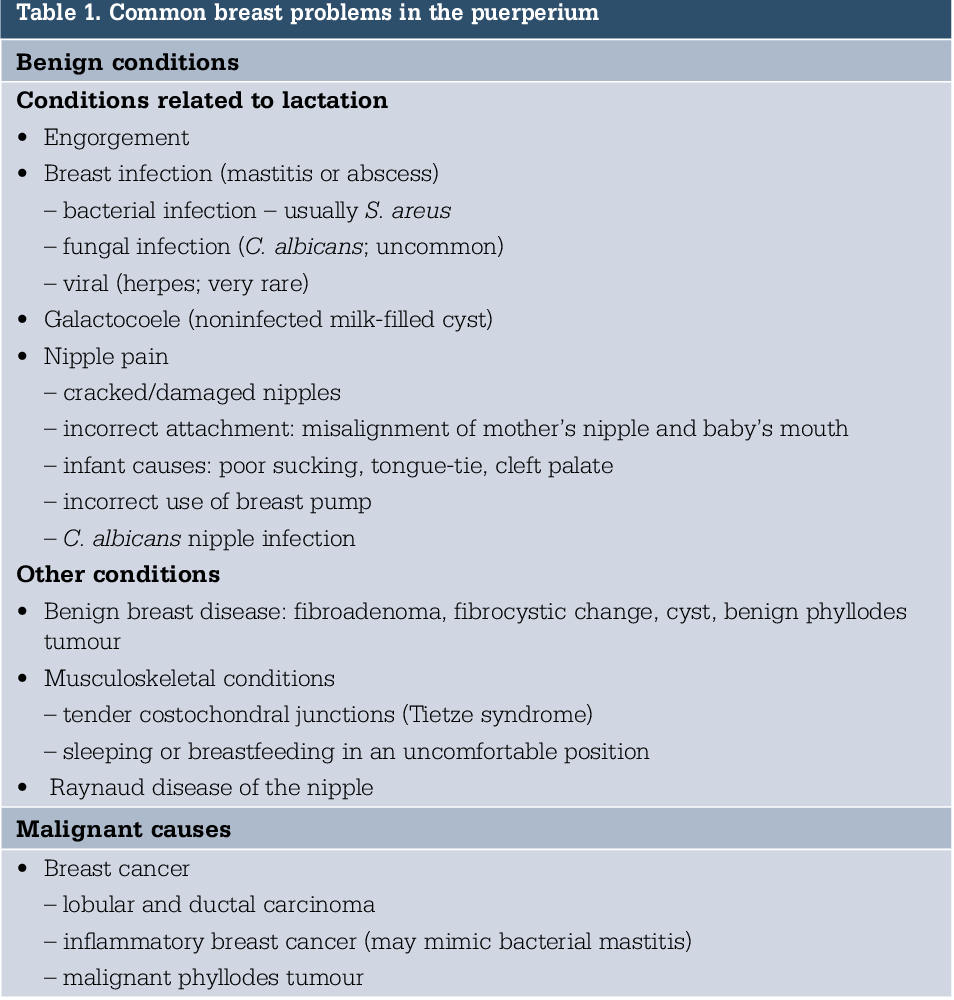
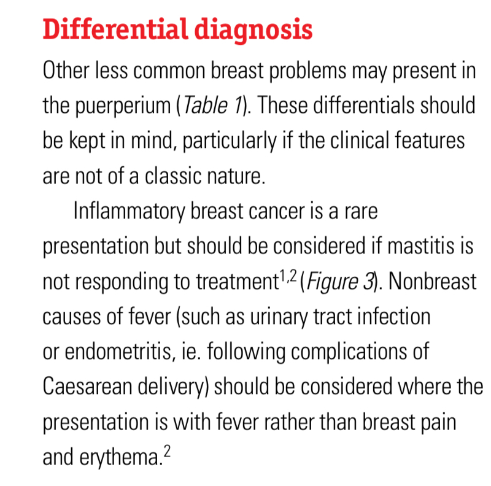

POST PARTUM CASES
Your next patient is a 27 year old lady who delivered her baby 6 weeks ago and today has presented to your General Practice for her 6 weeks check.
Task:
• Take history
• Physical examination will appear on the screen
• Request further investigation
Two assessment
- Mother
- Baby (vaccination and stuff)
In exam only one will be asked
POSTPARTUM CARE REVIEW
Main Goal
- Explore complaints that are common after delivery/pregnancy
Common Health Conditions in the First 6 Months After Delivery
Pain
- Cesarean section → abdominal pain
- Vaginal delivery → pain
- Pain from cuts/episiotomies/tears that were treated
Sexual Problems
- Difficulty/pain with intercourse, especially after tears or difficult delivery
Hemorrhoids
- Common during pregnancy and may persist after delivery
Bowel Problems
- Higher rate of constipation
Urinary incontinence
- Severe version may include fecal incontinence if episiotomy extended to anal sphincters
Contraception
- Always a key point in postpartum ladies
- Lactational contraception works if exclusively breastfeeding
- Not 100%
- Do not want pregnancy 2 months after delivery
- Preferably put the lady on contraception
- Not 100%
- Different methods exist
- Many can be done immediately after delivery (e.g. Mirena, Implanon)
- Many can be done immediately after delivery (e.g. Mirena, Implanon)
- Combined oral contraceptive pill:
- Start at least 6 weeks after delivery
- Avoid estrogen pills in first 6 weeks due to DVT risk
- Start at least 6 weeks after delivery
- Progesterone-only methods:
- More flexible
- Mirena immediately
- Implanon
- POPs
- More flexible
Respiratory Problems
- Higher rates of respiratory tract infections
- Part of the “breathing problems” mnemonic (to be discussed later)
Breast Problems
- Breastfeeding → lactation-related problems
- Not breastfeeding → engorgement pain, need to take care of suppressed milk supply
Other Common Conditions
- Endometritis (previous case example: delivered 10 days ago, now vaginal bleeding)
- Anemia (due to pregnancy and blood loss during delivery)
- Depression, psychosis, mental health conditions postpartum
- Severe
- Risky because involves both mother and child
- Suicidal ideation risks two people
- Severe
- Returning fertility and contraception remain important
EXAMINATION
(Not asked in the case, but what we look for)
- Signs of anemia
- Blood pressure
- Wound check:
- Cesarean section wound
- Episiotomy tear
- Cesarean section wound
- Thyroid check
- Urine check if any concerns
INVESTIGATIONS TO CONSIDER POSTPARTUM
- Full blood examination
- Iron studies (for anemia)
- TSH if pre-existing thyroid problem (levothyroxine requirements change)
- Oral glucose tolerance test at 6 weeks if:
- Gestational diabetes
- Large baby
- Gestational diabetes
- Cervical screening test:
- If missed in third trimester, do it after delivery when due
Your next patient is a 27 year old lady who delivered her baby 6 weeks ago and today has presented to your General Practice for her 6 weeks check.
Task:
• Take history
• Physical examination will appear on the screen
• Request further investigation
HISTORY TAKING STRUCTURE
1. Opening
- Start with an open-ended question.
- You don’t expect much of a complaint.
- Acknowledge her ( thank you for coming in for assessment) and congratulate her.
- One rapport question:
- “How are you coping with motherhood?” or
- “Are you enjoying motherhood?”
- “How are you coping with motherhood?” or
2. Explore the Delivery and Pregnancy
- “Tell me about your delivery.”
- Vaginal delivery or C-section?
- Vaginal delivery or C-section?
- Complications during delivery:
- Any tears?
- Any cuts made?
- Any excessive bleeding?
- Excessive bleeding → consider anemia.
- Tears/cuts → to examine later.
- Excessive bleeding → consider anemia.
- Any tears?
- Complications during pregnancy:
- High blood sugar? +
- High blood pressure?
- Any other problem?
- High blood sugar? +
- If gestational diabetes:
- Explore treatment (insulin or lifestyle/diet).
- Is treatment ongoing or stopped after delivery?
- Explore treatment (insulin or lifestyle/diet).
3. Postpartum History Taking
5 Bs
Breast and Baby
Blues
Birth Canal
Bowel and Bladder
Birth control
A. Symptoms
- Feeling tired?
- Shortness of breath or racing heart on exercise?
→ For anemia. - Pain:
- Any pain in the stomach or private parts?
- Any pain in the stomach or private parts?
B. Birth Canal
- Ask:
- Any vaginal bleeding?
- Any discharge?
- Any fever or chills?
- Key questions for endometritis.
- Key questions for endometritis.
- Any vaginal bleeding?
- Normal postpartum lochia should be much better by six weeks.
- If discharge still present:
- Explore color.
- Clear, getting better, no blood in it, not purulent, no foul smell then we are OK with it.
- Yellowish, foul-smelling, purulent → significant.
- C-section:
- “Is the wound on your abdomen healing well?”
- Ask abdominal pain if missed earlier.
- “Is the wound on your abdomen healing well?”
- Vaginal delivery:
- “Are the tears or cuts healing well?”
- “Are the tears or cuts healing well?”
- “Do you feel any lumps down below?”
- For prolapse.
- For prolapse.
C. Bladder
- “Do you leak urine?”
- Especially when coughing or sneezing (stress incontinence).
- Especially when coughing or sneezing (stress incontinence).
D. Bowel
- Any constipation?
- Any lumps around the back passage? (hemorrhoids)
- Do you leak stools or soil yourself?
E. Breathing
- One question: shortness of breath.
- Can ask if getting flus more often (not a key symptom).
4. Baby and Breast (1st key part)
- Touch the baby history briefly:
- “How is the baby doing?”
- Any concerns with weight gain or growth?
- Is the baby breastfed or formula fed?
- “How is the baby doing?”
Breastfeeding (imp)
- “Were you taught the proper technique of breastfeeding or lactation?”
- Symptoms:
- Pain in breast?
- Swelling or redness?
- Pain in breast?
- Risk factors:
- Cracked nipples?
- Pain on breastfeeding?
- Cracked nipples?
- Fever and chills can also occur in mastitis/breast abscess.
5. Blues (Mental Health) (2nd key part)
- Ask mood:
- “How has your mood been lately?”
- “How has your mood been lately?”
- Sleep:
- “Tell me, how is your sleep going?”
- “Tell me, how is your sleep going?”
- Social assessment:
- “How are things going at home?”
- “Is your partner supportive?”
- “How are things going at home?”
- Suicidal ideation:
- “Have you had any thoughts of harming yourself or the baby?”
- “Have you had any thoughts of harming yourself or the baby?”
- Alcohol or drugs (relation to mental health).
6. Birth Control
- “Has your periods started or restarted?”
- If getting periods → lactational contraception not working properly.
- If getting periods → lactational contraception not working properly.
- “Have you started sexual activity?”
- Any pain or discomfort during intercourse?
- Any pain or discomfort during intercourse?
- Cervical screening:
- When was the last time?
- Is she due?
- When was the last time?
OTHER KEY POINTS
Gestational Diabetes
- Common in cases.
- Justifies investigations.
If Fever Found
- Proper assessment should consider:
- Endometritis
- Mastitis/Breast abscess
- UTI
- Also consider other infections:
- Gastroenteritis
- Skin infections
- ENT infections
- And so on
Investigations
- Routine:
- Full blood examination
- Iron studies (expecting anemia)
- Full blood examination
- If gestational diabetes:
- Blood sugar level check
- Test: Oral Glucose Tolerance Test (not FBS or HbA1c)
- Blood sugar level check
- If fever or infection concerns:
- Full blood examination for white
- ESR and CRP
- Full blood examination for white
- Depending on case direction:
- Endometritis → vaginal swabs
- Mastitis → breast examination, possibly breast ultrasound (if worried about abscess)
- Urine MCS (cheap test, useful for UTIs)
- Endometritis → vaginal swabs
POSTPARTUM BREAST LUMP / MASTITIS
Background
- In recent years, these two were mixed into a new type of case:
- Your next patient is a 30 year old lady who has presented to you concerned of a breast lump.
- Task:
- Take history for 6 minutes
- Explain your diagnosis and differentials
- The stem does not mention postpartum.
- Confusion occurs because candidates rely on recalls instead of proper history and differentials.
- This is still a breast lump case, and breast abscess is only one differential.
Key Diagnostic Principle
- Breast abscess is a differential, especially in breastfeeding.
- But top and most concerning differential is breast cancer.
- Do not assume mastitis, abscess, or galactocele based on recall.
- The purpose of the case is to see if the candidate prioritizes cancer.
Findings
- Mild pain
- Mild redness
- + can feel a lump
- No fever
- Delivered 10 weeks ago
- Breast feeding, cracked nipple
- Family history of breast cancer
Does this look like an abscess?
- No fever.
- No severe pain or redness.
- Abscess would have severe pain, swelling, redness.
Can it be mastitis?
- Possibly, but lump is present and features not typical.
Could it be galactocele?
- Possibly a cyst.
Most concerning differential: Breast cancer.
Approach
- Diagnosis must start with ruling out cancer coz there is lump in the breast. Even though it can be possible that it is not the case.
- Do not prioritize mastitis, abscess, or galactocele over cancer.
Your next patient is a 30 year old lady who has presented to you concerned of a breast lump.
Task:
- Take history for 6 minutes
- Explain your diagnosis and differentials
HISTORY TAKING STRUCTURE (6 minutes)
Open-Ended Start
- Patient concern: “I’m feeling a lump in my breast.”
- Approach the lump—not mastitis or abscess.
- Acknowledge concern.
Explore Lump
Timing:
- When first noticed? Since when?
- First time or previous breast lumps?
- Is it increasing in size?
- Number of lumps? How many?
- Rough size?
Character:
- Painful to touch?
- Any redness or swelling?
- Hard or soft?
- Mobility: Can it be moved freely?
- Painful to touch?
Start Differential Thinking
You may not know she is breast feeding yet but even if you know from recall that she have history of breast feeding start with breast cancer history taking.
1. RED FLAGS – Breast Cancer
- Weight loss?
- Loss of appetite?
- Lumps/bumps in armpit or neck?
- Nipple discharge? (If yes—ask color)
- Any nipple changes like:
- Ulcers?
- Rashes?
- Looks different compared to the other side? Like (Crack nipple) or Nipple retraction?
- Ulcers?
- Cracked nipple may hint at breastfeeding.
- Family history of breast or ovarian cancer.
2. Breast Abscess Differential
- Are you breastfeeding?
- Fever or chills?
- Infection features: tiredness, nausea.
- Proper breastfeeding technique taught?
- Cracked nipple?
3. Fat Necrosis Differential
- Any trauma to the breast?
4. Breast Cancer Risk Factors
- Smoking?
- Alcohol?
- Previous breast surgery?
- Previous imaging/radiation to breast?
Five Ps (Typical Women's History)
- Period (LMP)
- Relation of lump or pain to cycle.
- Looking for fibrocystic changes/cyclical mastalgia.
- Relation of lump or pain to cycle.
- Pregnancy history
- Number of pregnancies.
- May reveal recent delivery and breastfeeding.
- Number of pregnancies.
- Pills
- Current contraception.
- Current contraception.
- Pap (Cervical Screening)
- (If age >50) Mammogram Screening
Summary of Differentials for Breast Lump
- Top: Breast cancer.
- Fibroadenoma.
- Fibrocystic changes.
- Fat necrosis.
- Breast cyst.
- Breast abscess.
- Galactocele (breast milk cyst).
LACTATION MASTITIS AND BREAST ABSCESS OVERVIEW
Risk Factors / Contributing Factors
Poor infant positioning
Milk stasis
Nipple damage
Breastfeeding
patient : “Should I continue breastfeeding?”
You: “Yes. We need to empty the breast. Breastfeeding and expressing milk are recommended.”
Antibiotics
Early antibiotic treatment
Concern is abscess formation
Flucloxacillin or dicloxacillin 500 mg six hourly Usually five days. Can go longer if no good response
Don’t need to worry about penicillin allergy
Follow-Up
Review at 48 hours
If infection doesn’t resolve → start worrying about abscess
Consider ultrasound at this point
Ultrasound
Not routine
Do ultrasound if there is a lump on presentation
Do ultrasound if no response to antibiotics at 48 hours
Differentials Related to Lactation


Infant Assessment
Examine infant
Check hydration
Check mouth for candida
Observe breastfeeding technique
Investigation
Mastitis is a clinical diagnosis
No investigations unless concerned about abscess. Go for ultrasound
Support for Breastfeeding
Advise to continue
Proper technique is important
If too painful → express milk with a pump
Many women think breastfeeding is bad → reassure
Breast Abscess
Likely needs procedure (aspiration or incision and drainage)
Continue breastfeeding if possible
Priority is fixing the abscess
But still must express milk
Referral
Lactational consultant or lactational nurse for technique and teaching
Review
Early review: 48 hours
Earlier if worried
Psychological Impact
Provide emotional support
Typical Mastitis Case – Step-by-Step
Presentation:
Breastfeeding
No lump
Pain, swelling, redness, fever, tired, maybe nausea
Nurse: “How do we manage this?”
Step 1 – Antibiotics “Start flucloxacillin for five days.”
Step 2 – Symptomatic Treatment
Paracetamol
Ibuprofen
Heat packs before
Cold packs after
“Heat packs before, cold packs after.”
Step 3 – Continue Breastfeeding
From the affected breast
Involve lactational consultant / nurse
“We recommend continuing breastfeeding from the affected breast.”
Step 4 – Early Follow-Up
48 hours
“We review at 48 hours.”
Step 5 – Consider Ultrasound
If lump on examination
If no response to antibiotics
“If she’s still febrile and worse at 48 hours, we consider ultrasound for abscess.”
Step 6 - Psychological Support
“We reassure that breastfeeding is safe, and proper technique prevents cracked nipples, pain, and infections.”
Breastfeeding Association
“We can refer her to the breastfeeding association for support.”
EXPLAINING DIAGNOSIS IN THIS CASE
- Main concern: Possibility of breast cancer.
- Reasons:
- Family history.
- Lump is not extremely painful.
- No fever.
- Family history.
- Abscess possible but less likely (would expect fever, severe pain, swelling).
- Galactocele/breast milk cyst possible but would be benign and not painful.
- Other possibilities:
- Fat necrosis.
- Fibroadenoma.
- Fibrocystic change.
- Simple breast cyst.
- Fat necrosis.
If ultrasound shows solid lump
- Not abscess or cyst.
- Proceed to triple test (biopsy included).
Common Failure Points
- Not finding breastfeeding history due to poor questioning.
- Automatically calling it breast abscess/mastitis.
- Not ruling out breast cancer.
- Ignoring inflammatory breast cancer possibility.
Final Key Message
- Even in postpartum/breastfeeding, breast cancer remains top differential before considering galactocele, breast abscess, or mastitis.